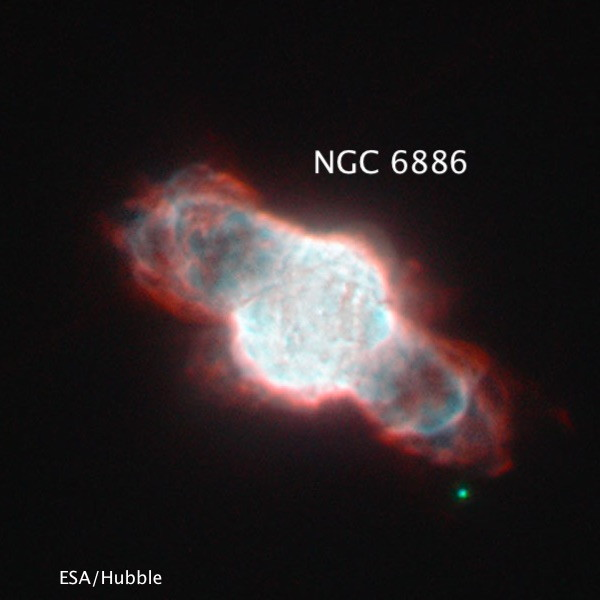
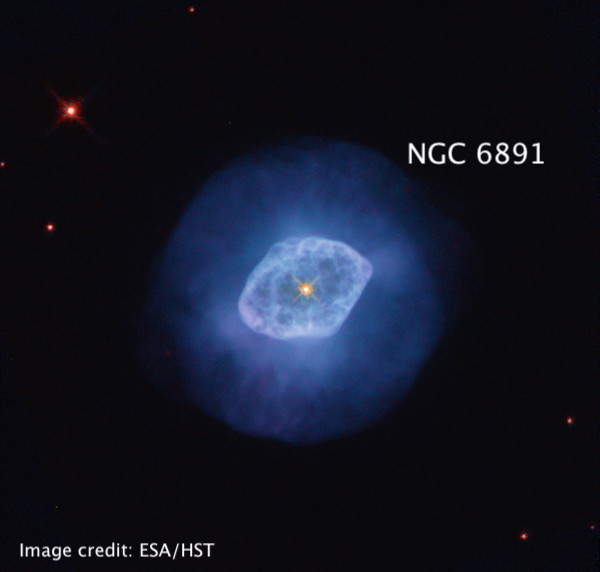
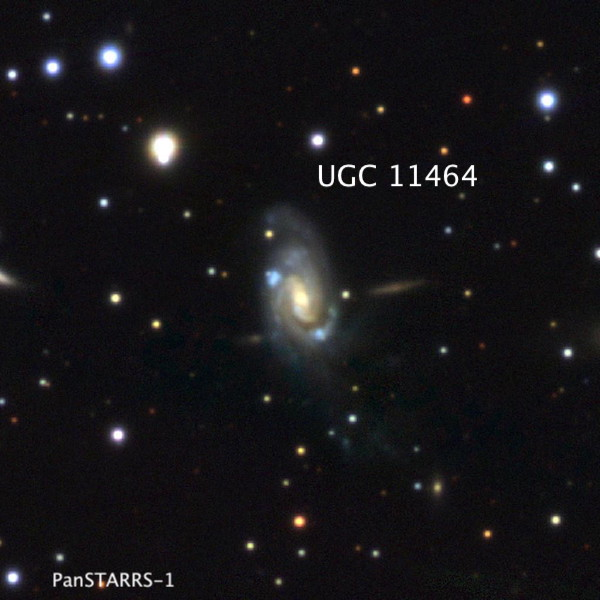
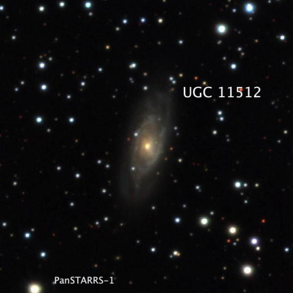
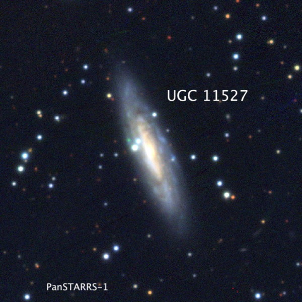
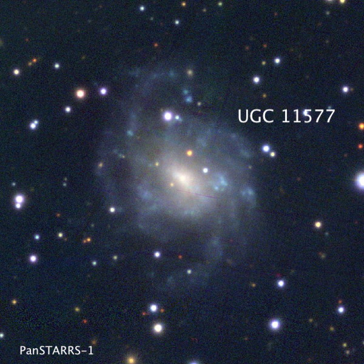
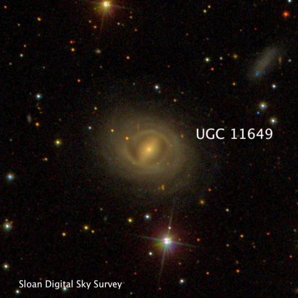
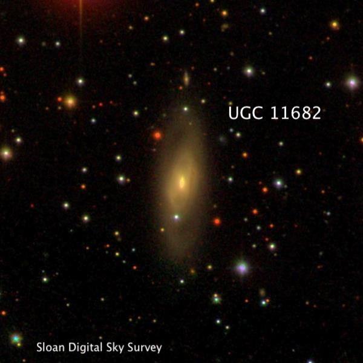

Aug 10/11/12 at McArthur
Last week, Dan Smiley, Jim Molinari and I observed for three nights at the "Albaugh Ranch Guest House” — not in Adin, but just outside of McArthur (off of 299) on Pitville Road at an elevation of 3312 ft. The trip was almost cancelled due to a questionable weather forecast a week before arrival, but fortunately Dan decided to take a chance on keeping the reservation and we were rewarded with three clear nights. This was my first time observing at this location, though a number of years ago, Carter Scholz, along with Doug and Angie Traeger had checked it out and gave a positive review. My wife also came along, partly to view the Perseids on Saturday night and to visit Lassen, which is an hour drive to the west and south. We spent Saturday afternoon strolling around Manzanita Lake on a gorgeous day. When we returned back to the Loomis museum at the north entrance to Lassen, there were a couple of amateurs outside with solar scopes. They were part of a group planning to host a star party near the campground in the evening.
The owners provided access to a grass field just above the house, which proved very convenient to set up our scopes and for easy access to the house. There were no exterior lights around the house, but depending where you were standing on the field, there were some visible street lights and neighbor lights along Pittville Rd, as well as perhaps from McArthur. Also, a surprising number of cars drove along Pitville Rd. at night, although there was no direct impact from the headlights -- they just distracted the peaceful setting. Light pollution maps show the site within a grey zone, though the location is fairly close to Fall River Mills (population 616) and of course, McArthur (pop. 334), which had minimal light domes.
I brought along my 14.5” Starmaster, Jim Molinari had his 22” UC Obsession and Dan Smiley used his 12” New Moon scope (as well as his night-vision device, which I used one night). I logged 64 objects over the three nights — I wasn’t sure if the 14.5” would pull in 15th mag UGC galaxies in the Milky Way, but I recorded 15 of these on two of the nights. Here’s a sample of the objects.
Steve Gottlieb
C/2023 E1 (Atlas): this comet had moved from Draco last month (viewed at Lake Sonoma and near the east side of the Pinnacles) to Cygnus. It was situated in a rich star field close to a small clump of stars at 21 29 51 +50 14. The comet is fading, but was still obvious and fairly large.
Comet 12P/Pons-Brooks. Appeared as a 13th mag diffuse glow with little or no concentration, round, 2' diameter. This comet had an unusually large outburst on July 19th, going from mag 16.6 to mag 11.6 overnight. This comet was discovered by French astronomer Jean-Louis Pons in July 1812. With an orbital period of 71 years, it is one of the brightest "Halley-type" and will reach a maximum mag of 4-4.5 in April '24, though low in the western sky during evening twilight.

I picked up this compact planetary at 158x as a pale blue soft 11th mag "star" in a very rich star field. It forms the NW vertex of an isosceles triangle with a mag 10.2 star 1.5' E and a mag 11.3 star 0.8' S. There was an excellent contrast gain with a NPB filter and the PN appeared far more prominent that the mag 10.2 star. At 226x a very small disc is resolved and 395x shows a small, easily resolved blue disc. At 566x, NGC 6886 appeared irregular but not clearly annular. British astronomer Ralph Copeland discovered NGC 6886 in 1884 at Dun Echt, Scotland, using a direct vision prism attached in front of the objective of his 6.1-inch refractor.

A bright, high surface brightness blue disc was resolved at 140x and the planetary became even more prominent in the field adding a NPB filter. At 226x the central star was visible in a very high surface brightness disc, which appeared to be encased in a fainter halo. At 395x, the central star was easier to view, but the seeing wouldn't support any higher power. A mag 12.2 star is 1' WNW. 8" (6/29/84): fairly high surface brightness, small blue disk. I’ve previously viewed this tiny planetary in my 80mm finder (confirmed by blinking), though it appeared stellar, as well as my 18” and 24”.
Again, Ralph Copeland discovered NGC 6891 in September 1884 while sweeping the Milky Way with his large refractor. He remarked "this seems to be identical with the 9.5 mag star DM +12°4266. It is in reality a planetary nebula about 4" in diameter with a nearly monochromatic spectrum.”

UGC 11464 = MCG +09-32-010 = CGCG 281-007 = PGC 63523 19 41 25.6 +51 49 13; Cygnus Mag = 15.2B; Size 1.0'x0.4’; PA = 11°
Very faint glow at 226x, elongated 3:1 N-S, ~30"x10". A mag 13.6 star is off the NE end, just 50" from center. In addition, a mag 10.2 star is 2.6' WNW and a pair of 10th mag stars is 3.8' NE. The two bright blue knots are intense star-forming regions, but they weren’t noticed.

UGC 11512 = CGCG 423-003 = PGC 64065 20 04 34.5 +12 44 22; Aquila V = 13.6; B = 14.6; Size 1.0'x0.5'; PA = 166°
Very faint, fairly small, elongated 2:1 N-S, 0.6'x0.3', though often only the brighter central region was seen. The extensions pop with careful averted vision. Situtated in a rich star field with a mag 11.3 star 2' NW and a mag 10.7/13 pair at 12" separation 2' SW. The Hubble-flow distance is nearly 200 million light years.

UGC 11527 = MCG +00-51-010 = CGCG 372-016 = PGC 64318 20 13 54.4 -01 09 27; Aquila B = 14.7; Size 1.7'x0.4'; PA = 21°
Very faint, quite elongated ~7:2 SSW to NNE, slightly brighter middle, ~45"x15". The galaxy often popped with averted vision but I couldn't hold it for an extended period. Several bright stars are nearby: a mag 8.5 star is 7' SW, a mag 10 star is 6.7' NW, a mag 9 star is 10' ESE, and mag 5.5 66 Aql is 13.5' NW. The Hubble-flow distance is ~244 million l.y.

UGC 11577 = MCG +00-52-025 = CGCG 373-025 = PGC 64844 20 30 35.4 +01 22 31; Aquila V = 13.4; B = 14.1; Size 1.6'x1.2'; Surf Br = 13.4
Very faint, moderately large, slightly elongated, very low even surface brightness. Requires averted and usually can hold for only a few seconds before losing. An E-W arc of 5 stars with 11th mag stars at the ends is immediately north and concave towards the galaxy.

UGC 11649 = MCG +00-53-009 = CGCG 374-028 = PGC 65718 20 55 27.6 -01 13 31; Aquarius V = 13.6; B = 14.6; Size 1.5'x1.1'; PA = 85°
Faint and diffuse at 260x but can hold continuously with averted vision, oval 4:3, ~35"-40" diameter, broad weak concentration. Located 10' NNE of mag 6.3 HD 199124. This star forms a 3.5' pair with mag 7.8 HD 199085 to its west.

UGC 11682 = MCG +03-54-003 = CGCG 449-004 = PGC 66176 21 08 22.6 +17 49 14; Dephinus V = 13.4; B = 14.4; Size 1.7'x0.5'; PA = 170°
Faint, thin streak at least 3:1 N-S, 0.6'x0.2'. Possible stellar or quasi-stellar nucleus. Located 6' SSE of a mag 9.3 star and 8' WNW of a mag 9.1 star. The Hubble-flow distance is 220-225 million l.y.